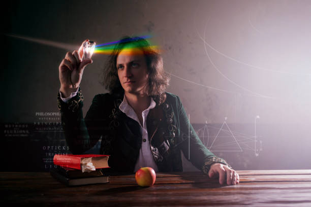

Felhasználónév: Isaac Newton
Szlogen: Az alma nem esik messze a fájától.
Foglalkozás: Matematikus, Fizikus, Filozófus, Polihisztor, Alimista ...
Hobbik: Munka, Alkímia, Pénzhamisítók üldözése
Bemutatkozás: Isaac Newton vagyok, szeretem a matematikát a fizikát és még képzett alkimista is vagyok. Ha ilyen kutatások érdekelne iratkozz fel!
